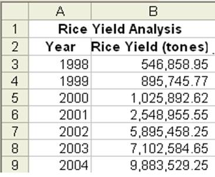

STAM 102 :: Lecture 12 :: CREATING GRAPHS

CREATING GRAPHS
Graphs or Charts
- The graphical representation of data is called graph or chart.
- The data entered in the excel sheet can be represented by a graph or a chart.
- MSEXCEL supports a wide variety of graphs.
- Example of graphs:
- Column, Line, Bar, Pie, Area, Doughnut, Radar, Surface, Bubble, Stock etc.
 Column Graph
- It shows data change over a period of time or illustrates comparisons among items.
- Categories are organized horizontally and values vertically.
- It is an idel chart for showing the variation in the value of an item over period of time.
Bar Graph
- Bar graph illustrates comparison among individual items.
- Categories are vertically organized and values horizontally.
Line Graph
- A line graph shows trends in data at equal intervals.
- It is very useful to show the change in the value over a period of time.
- It will show very clearly whether a value is ascending or descending.
Pie Chart
- Pie chart is used to plot data for a single data series.
- Each data point is represented by one piece of the circular pie chart.
- The size of each piece is proportional to the value it represents, so all the data points taken together will form circle.
Area Graph
- Area chart is similar to line chart.
- But plots series one above the other with different colors and shades.
- It emphasizes the magnitude of change over a period of time.
XY (Scatter) Graph
- It plots each point with a mark of two groups of numbers as one series of XY coordinates.
- It shows uneven intervals of data and it is commonly used for scientific data.
CREATING GRAPHS
- Create a spreadsheet with data rice yield in tones from the year 1998 to 2004 as shown below:
.
- Go to Insert Menu select Chart and click.
First Step
- A dialog box of chart wizard will appear, select the required type of chart from the chart type.
- Then select the chart sub type according to your requirement.
Second Step
- Select the data range in this step.
- To give enter data range move the cursor on excel sheet and
- by clicking select the data area you want or
- type cells position if you know exactly which area you want.
- Click on the Next button.
- the data range selected in our example is Sheet1!$A$1:$B$9
- Sheet1 we are in sheet1 in MS Excel.
- $ Sign is used to represent the absolute position of the data in MS Excel.
- The range is to conform that the chart is being prepared of the proper sheet of the file.
- On confirming click on Next button.
Third Step
- Here the Chart title, Category and Value information are entered, which will be displayed when the chart is viewed.
- Click Next button.
Fourth Step
- This step will provide in the way you want to place the chart.
- Select the appropriate option available in the chart wizaerd.
- Click the Finish button.
- The chart will be as shown below:
Moving Chart
- If the chart needs to be placed in different position, then we can move the chart wherever we want.
- To move the chart select the chart by clicking on it without leving the mouse button, drag in the direction you want.
- The chart will move and then release it where you want.
Changing the Chart Size
- To change the chart size, select the chart by clicking on it.
- You will get eight small rectangular boxes around the chart.
- Now move the cursor to the border of the chart and the mouse pointer changes to double headed arrow cursor.
- Then press the left mouse button and drag.
- If you want to reduce the size, drag towards the centre of the chart, else in opposite direction to increase the size of the chart.
Changing the Chart Type
- Select the chart
- Click the right mouse button
- From the right context menu select Chat type
- Select the required chart type from the chart type window.
- Click OK.
- If the selected chart type is Area type then the chart will be as shown below:
| Download this lecture as PDF here |